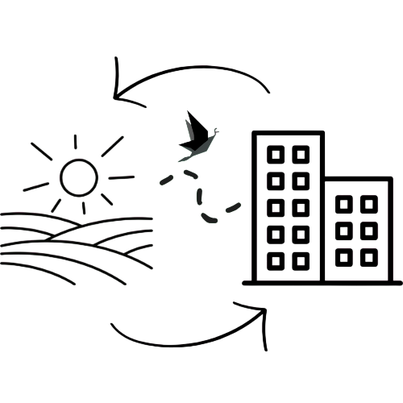

Em parceria com o Agrinho esse site celebra a conexão entre o campo e a cidade, mostrando como cada um tem seu papel na construção de um futuro mais sustentável. Por meio de conhecimento, parceria e respeito à natureza, o programa une pessoas, saberes e culturas, valorizando tanto quem produz no campo quanto quem vive na cidade.
Este site foi criado para compartilhar algumas das atividades realizadas na escola. Aqui você encontra uma página com dois projetos desenvolvidos pelos alunos, mostrando na prática temas como meio ambiente, sustentabilidade e o cuidado com as plantas. Também há uma página de contato e uma sobre o criador do site, contando um pouco mais sobre quem desenvolveu esse projeto. Espero que goste!